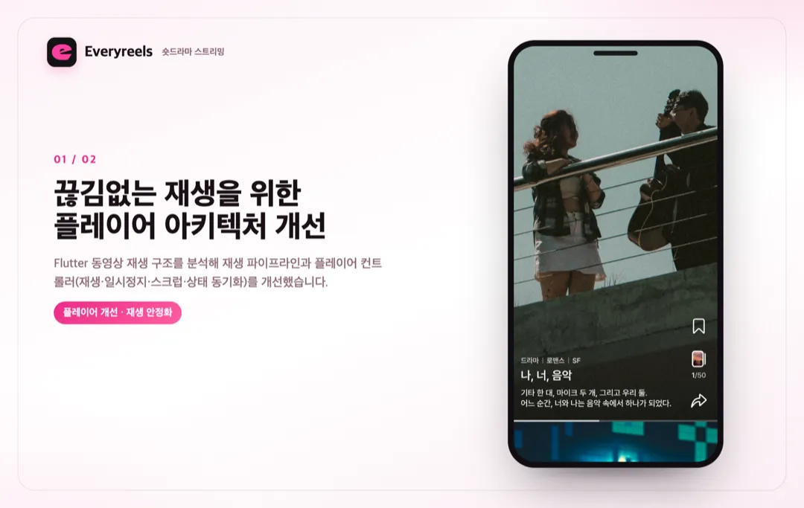
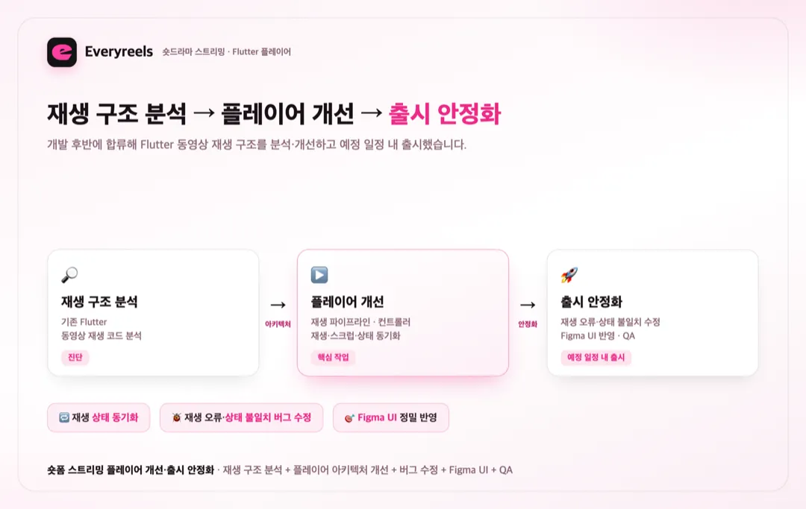

홈 / 포트폴리오 / Everyreels — 숏드라마 스트리밍
앱 개발
숏드라마 스트리밍 Everyreels Flutter 플레이어 아키텍처 개선 및 출시 안정화
참여 기간 · 2025.06 ~ 2025.08


포트폴리오 소개
- 숏 드라마를 넘기면서 자동 재생하는 숏폼 스트리밍 앱 'Everyreels'의 동영상 플레이어를 개선하고 출시를 안정화한 프로젝트입니다.
- 개발 후반에 합류해 Flutter 동영상 재생 구조를 분석·개선하고 예정 일정 내에 출시했습니다.
작업 범위
- Flutter 동영상 재생 구조 분석 및 플레이어 아키텍처 개선
- 재생 파이프라인 개선
- 플레이어 컨트롤러 구현/개선(재생·일시정지·스크럽·재생 상태 동기화)
- 재생 오류·상태 불일치 버그 수정
- Figma 디자인 정밀 반영(UI)
- 출시 전 안정화 및 QA
주요 업무 및 기능
- 플레이어: 재생 파이프라인·컨트롤러 개선으로 끊김 없는 숏폼 재생 경험
- 상태 동기화: 재생/일시정지/스크럽에 따른 재생 상태 정합성 확보
- 버그 수정: 재생 오류·상태 불일치 등 재생 관련 결함 해결
- UI: Figma 디자인을 정밀하게 반영
- 안정화: 출시 전 QA로 재생 안정성 확보
주안점
- 넘기며 자동 재생되는 숏폼 특성상 끊김 없는 재생과 상태 정합성
- 후반 합류라는 촉박한 일정 안에서의 구조 분석·개선 속도
- 예정 일정 내 출시를 위한 안정화·QA
문제점
- 개발 후반 시점에 동영상 재생 구조가 안정화되지 않아 출시 일정 리스크가 있었습니다.
- 넘기며 자동 재생되는 숏폼 특성상 재생 상태 정합성과 끊김 없는 재생이 핵심이었습니다.
- 촉박한 일정 안에서 기존 코드를 분석해 개선해야 했습니다.
프로젝트 목표
- Flutter 동영상 재생 구조를 분석해 플레이어 아키텍처를 개선.
- 재생 파이프라인·컨트롤러를 정비해 끊김 없는 재생과 상태 정합성 확보.
- 재생 관련 버그를 해결하고 예정 일정 내 안정적으로 출시.
주안점
- 재생 파이프라인·컨트롤러의 안정성과 상태 동기화.
- 재생 오류·상태 불일치 결함의 신속한 해결.
- Figma UI 정밀 반영과 출시 전 QA.
프로젝트 성과
플레이어 아키텍처 개선
Flutter 동영상 재생 구조를 분석해 재생 파이프라인과 플레이어 컨트롤러(재생·일시정지·스크럽·상태 동기화)를 개선했습니다.
재생 오류·상태 불일치 해결
넘기며 자동 재생되는 숏폼에서 발생하던 재생 오류와 재생 상태 불일치 버그를 수정해 재생 안정성을 확보했습니다.
예정 일정 내 출시 안정화
개발 후반에 합류했음에도 Figma UI 정밀 반영과 출시 전 QA로 예정 일정 내에 출시를 마쳤습니다.
비슷한 프로젝트를 계획 중이신가요? 아이디어 단계여도 괜찮습니다.
프로젝트 문의하기 →